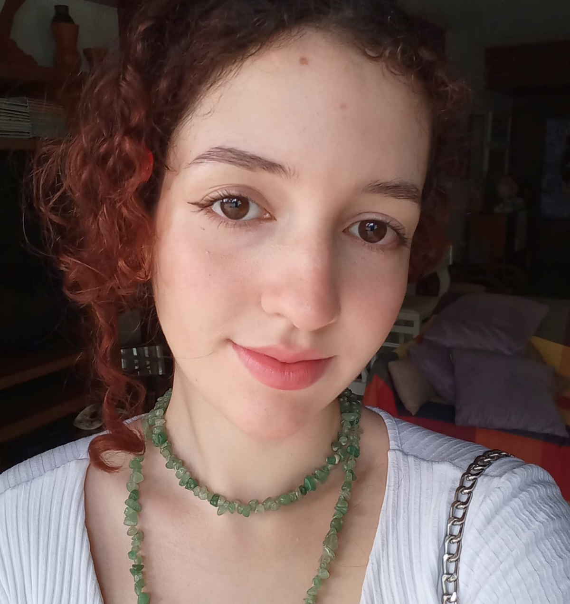

Lígia Lima
 Spotify
Spotify
 Letterboxd
Letterboxd
Biografia
Lígia Lima (Recife, 9 de janeiro de 2006) é uma estudante do segundo período de Publicidade e Propaganda na Universidade Federal de Pernambuco (UFPE). Sua carreira na comunicação começou em 2013 quando ela decidiu criar um de seus primeiros sucessos, um canal no Youtube. Lígia se aventurou em diversos campos dentro da comunicação, dentre esses se destacam a fundação de uma marca de desodorante em 2014 (que ganhou até comercial), criação de um blog sobre Violetta em 2015, além de múltiplas "fan accounts" no Twitter. No início de 2025, ela entrou na Agência Experimental de Publicidade Minerva como Mídia e Produção, sendo assim, um marco em sua carreira. Além disso, Lígia experimentou também outras áreas com uma breve carreira na programação em 2020, na qual ela sabiamente aprendeu a ver as respostas das questões nos formulários Google através do modo inspecionar.

Habilidades
Lígia, como toda pessoa cronicamente online, começou sua trajetória no design pelo PicsArt e Canva com o intuito de fazer conteúdo de fandom no Twitter. Com o tempo livre pela greve, ela descobriu a plataforma do Figma (que dá uma surra no Photoshop) e resolveu aprender os básicos de UI design. Ela também tem um conhecimento intermediário em Pacote Office, apesar de não querer nada com a área de dados. Além disso, recentemente, no processo seletivo do CITi, Lígia entrou em contato com as linguagens de programação HTML e CSS e, estresses à parte, achou menos pior do que pensava originalmente.
Hobbies e Passatempos
Lígia destaca-se por ser uma verdadeira topa tudo, passando por inúmeras áreas durante sua carreira. Iniciando no balé, ela já praticou ginástica e capoeira e, embora tenha passado mais tempo na dança, é notorialmente sem coordenação motora. Ademais, Lígia passou um grande período de tempo investindo em suas habilidades artísticas, participou do coral da escola, fez aulas de desenho, piano e teatro e teve a grande honra de receber o aclamado papel de Maria Julieta na peça escolar "Romeu e Julieta no Cangaço". Lígia também é uma grande começadora de séries, que sempre acabam por serem abandonadas no meio, entretanto, quando se trata de suas séries favoritas (Sherlock, Merlí, The100 pré temporada 4), ela ama rever repetidamente como se fosse a primeira vez.